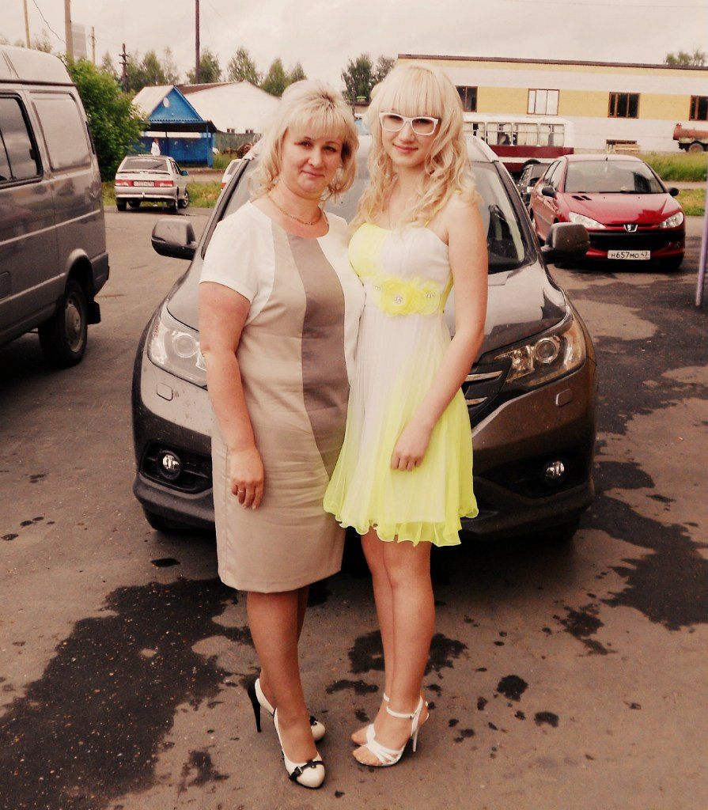
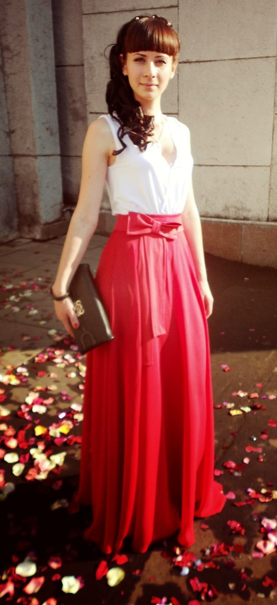
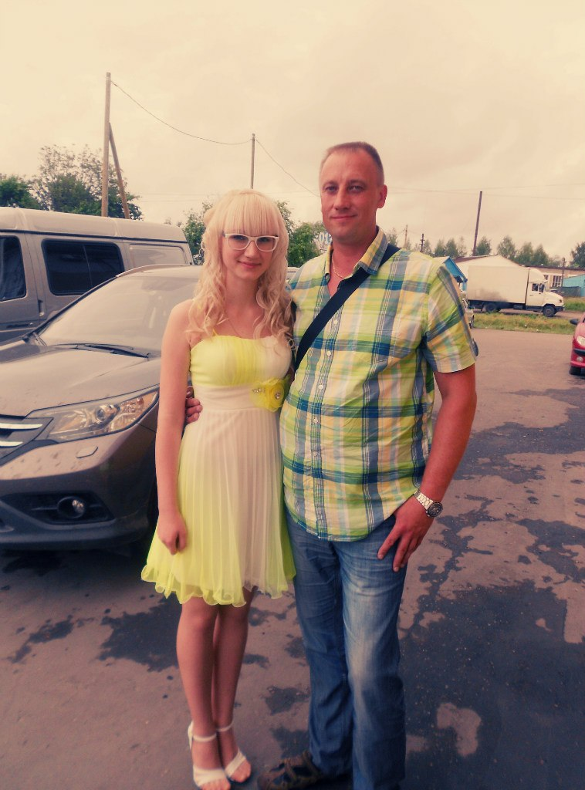

мама Света. Владеет двумя магазинами женской одежды и каждый из них по-своему шикарный. Каждый раз,когда она заходит в магазин, от нее исходит сияние счастливого человека,а когда она продает товары,она озаряет мир улыбкой доброты и делает людей счастливее. Машина моей мамы блестит на солнце так же,как и ее улыбка в пасмурный день. Глаза ее подобны самому густому лесу в тайге. А душа ее открыта для каждого нуждающегося в поддержке. Обладает внешностью,подобной внешности джорджа клуни, по этому он обладает блистательной карьерой. Всякий увидевший его мечтает обладать столь же потрясающей внешностью и такими же бездонными,подобными синему морю в ясный день и голубому небу,которое увидел Андрей,лежа раненый на поле под Аустерлицем, голубыми глазами. сестра Юля.  Это невероятная,превосходная,изумительная девушка с фигурой богини Афродиты,и в ней столько же добра и любви сколькими обладала мать Тереза. Ее профессия отражает ее внутренний мир,потому что моя Юля работает на самой благородной работе из всех - она врач. Ее волосы как водопад,стремящийся покорить своей красотой сердца увидевших его.
папа Андрей.